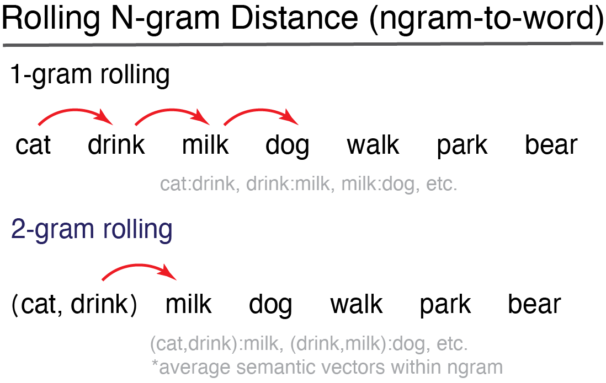
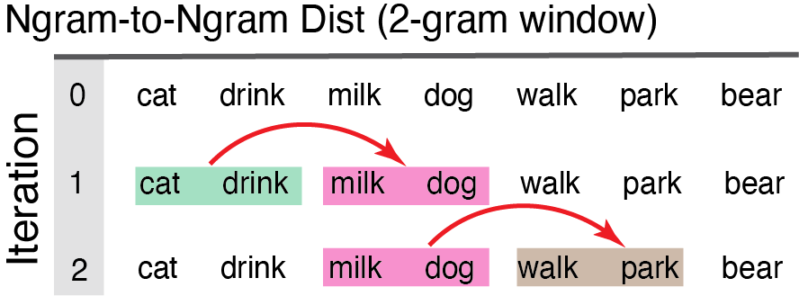
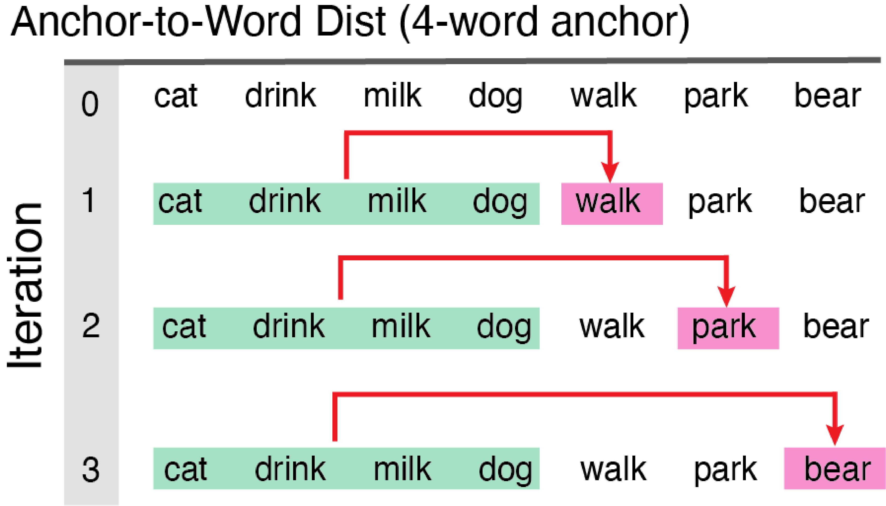
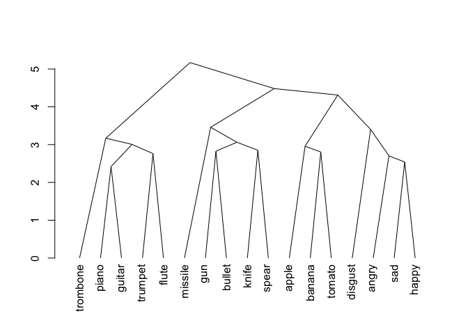
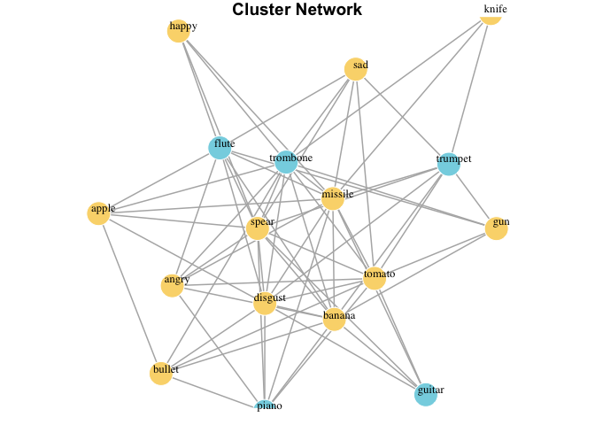

SemanticDistance


Overview
SemanticDistance does the following operations: - cleans and formats ordered text (monologues and dialogues) - cleans and formats unordered word lists (e.g., bags-of-words) - computes pairwise semantic distance metrics using numerous chunking options - finds clustering solutions and creates simple semantic networks from given word list vectors.
Install & Load Package
Install the development version of SemanticDistance using the devtools package.
#devtools::install_github("Reilly-ConceptsCognitionLab/SemanticDistance")
library(SemanticDistance)Step 1: Identify Your Data Structure
SemanticDistance contains specialized functions for processing the text formats delineated to follow. To learn more about the specific options for string cleaning, computing distances, and visualizing output for each of these formats, visit its corresponding vigbnette.
Monologue (example)
| mytext |
|---|
| The girl walked down the street. The wrestler punched the boxer. I could not open the door. 95 dogs jumped on me. |
A monologue for our pourposes consists of any block of text NOT delineated by a talker/speaker. This includes ordered texts like stories or narratives, or unordered lists (i.e., bags of words). The minimum requirement for a monologue is one row and one column with some text in it. Here’s a sample monologue.
Dialogue (example)
| text | speaker |
|---|---|
| Hi Peter. It’s nice to see you | Mary |
| Hi Mary. Hot out today | Peter |
| It sure is. | Mary |
| Did you read that book? | Peter |
| No I haven’t had time. | Mary |
A dialogue is an ordered language sample split by a talker/speaker/interlocutor factor. The minimum requirement for formatting dialogues is to supply a dataframe with two columns. One column is delineated by a speaker_id (e.g., name, speaker, talker) and the second column should contain the speaker’s corresponding text output. Above you will see a sample dialogue formatted correctly for all proceeding steps of SemanticDistance.
Word Pairs in Columns (example)
| word1 | word2 |
|---|---|
| Dog | trumpet |
| the | BANANA |
| rat | astronaut |
| *&^% | lizard |
| bird | bird |
| shark | shark |
Word pairs arrayed as vectors within columns. The minimum requirment is two columns with at least one row of paired data (e.g., dog, leash). Here’s a sample dataframe of word pairs formatted correctly for all proceeding steps of SemanticDistance.
Unordered Word List (example)
| mytext |
|---|
| trumpet trombone flute piano guitar gun knife missile bullet spear apple banana tomato sad angry happy disgusted |
An unordered bag of words. You needn’t split your text but okay if you do. Here’s a sample dataframe. You would use this format for analyzing structure and network properties using dendrogram or network options.
Step 2 Clean and Format Data
Transforms text to lowercase then optionally clean (omit stopwords, omit non-alphabetic chars), lemmatize (transforms morphological derivatives of words to their standard dictionary entries), and split multiword utterances into a one-word-per row format.
clean_monologue_or_list
Arguments to clean_monologue_or_list
-dat raw dataframe with at least one column of text.
-wordcol quoted variable column name where your target text lives (e.g., ‘mytext’)
-omit_stops omits stopwords, T/F default is TRUE.
-lemmatize transforms raw word to lemmatized form, T/F default is TRUE.
Monologue_Cleaned <- clean_monologue_or_list(dat=Monologue_Typical, wordcol='mytext', omit_stops=TRUE, lemmatize=TRUE)
knitr::kable(head(Monologue_Cleaned, 12), format = "pipe", digits=2)| id_row_orig | text_initialsplit | word_clean | id_row_postsplit |
|---|---|---|---|
| 1 | the | NA | 1 |
| 1 | girl | girl | 2 |
| 1 | walked | walk | 3 |
| 1 | down | down | 4 |
| 1 | the | NA | 5 |
| 1 | street. | street | 6 |
| 1 | the | NA | 7 |
| 1 | wrestler | wrestler | 8 |
| 1 | punched | punch | 9 |
| 1 | the | NA | 10 |
| 1 | boxer. | boxer | 11 |
| 1 | i | NA | 12 |
clean_dialogue
Arguments to clean_dialogue
-dat your raw dataframe with at least one column of text AND a talker column.
-wordcol column name (quoted) containing the text you want cleaned.
-whotalks column name (quoted) containing the talker ID (will convert to factor).
-omit_stops omits stopwords, T/F default is TRUE.
-lemmatize transforms raw word to lemmatized form, T/F default is TRUE.
Dialogue_Cleaned <- clean_dialogue(dat=Dialogue_Typical, wordcol="text", who_talking = "speaker", omit_stops=TRUE, lemmatize=TRUE)
knitr::kable(head(Dialogue_Cleaned, 12), format = "pipe", digits=2)| id_row_orig | text_initialsplit | speaker | word_clean | id_row_postsplit | turn_count |
|---|---|---|---|---|---|
| 1 | hi | Mary | NA | 1 | 1 |
| 1 | peter | Mary | peter | 2 | 1 |
| 1 | its | Mary | NA | 3 | 1 |
| 1 | its | Mary | NA | 4 | 1 |
| 1 | nice | Mary | nice | 5 | 1 |
| 1 | to | Mary | NA | 6 | 1 |
| 1 | see | Mary | see | 7 | 1 |
| 1 | you | Mary | NA | 8 | 1 |
| 2 | hi | Peter | NA | 9 | 2 |
| 2 | mary | Peter | mary | 10 | 2 |
| 2 | hot | Peter | hot | 11 | 2 |
| 2 | out | Peter | out | 12 | 2 |
clean_paired_cols
Your data for computing pairwise semantic distance are arrayed in two paired columns in a dataframe. These columns need not be adjacent. You will specify their variable names in the function call.
Arguments to clean_paired_cols
-dat your raw dataframe with two columns of paired text.
-word1 quoted variable reflecting the column name where your first word lives.
-word2 quoted variable reflecting the column name where your first word lives.
-lemmatize transforms raw word to lemmatized form, T/F default is TRUE.
WordPairs_Clean <- clean_paired_cols(dat=Word_Pairs, wordcol1='word1', wordcol2='word2', lemmatize=TRUE)
knitr::kable(head(WordPairs_Clean, 6), format = "simple", digits=2) | id_row_orig | word1_clean | word2_clean | word1 | word2 |
|---|---|---|---|---|
| 1 | dog | trumpet | Dog | trumpet |
| 2 | the | banana | the | BANANA |
| 3 | rat | astronaut | rat | astronaut |
| 5 | bird | bird | bird | bird |
| 6 | shark | shark | shark | shark |
| 8 | dog | leash | Dog | leash |
Step 3: Compute Semantic Distance
Now compute semantic distance for your selected format from one of the options below.
dist_ngram2word
This function works on monologues (continuous ordered samples) only! Computes cosine distance using a rolling ngram approach consisting of groups of words (ngrams) to the next word. IMPORTANT the function looks backward from the target word skipping over NAs until filling the desired ngram size.
Arguments to dist_ngram2word:
-dat dataframe of a monologue transcript cleaned and prepped.
-ngram window size preceding each new content word.

Ngram2Word_Dists1 <- dist_ngram2word(dat=Monologue_Cleaned, ngram=1) #distance word-to-word
knitr::kable(head(Ngram2Word_Dists1, 8), format = "pipe", digits = 2)| id_row_orig | text_initialsplit | word_clean | id_row_postsplit | CosDist_1gram_glo | CosDist_1gram_sd15 |
|---|---|---|---|---|---|
| 1 | the | NA | 1 | NA | NA |
| 1 | girl | girl | 2 | NA | NA |
| 1 | walked | walk | 3 | 0.47 | 1.06 |
| 1 | down | down | 4 | 0.28 | 0.80 |
| 1 | the | NA | 5 | NA | NA |
| 1 | street. | street | 6 | 0.36 | 0.87 |
| 1 | the | NA | 7 | NA | NA |
| 1 | wrestler | wrestler | 8 | 0.97 | 0.63 |
dist_ngram2ngram
This function works on monologues (continuous ordered samples) only. User specifies n-gram size (e.g., ngram=2). Distance computed from each two-word chunk to the next iterating all the way down the dataframe until there are no more words to ‘fill out’ the last ngram.
Arguments to dist_ngram2ngram
-dat dataframe w/ a monologue sample cleaned and prepped
-ngram chunk size (chunk-to-chunk), (e.g., ngram=2 means chunks of 2 words compared to the next chunk of two words).

Ngram2Ngram_Dist1 <- dist_ngram2ngram(dat=Monologue_Cleaned, ngram=2)
knitr::kable(head(Ngram2Ngram_Dist1, 8), format = "pipe", digits = 2)| id_row_orig | text_initialsplit | word_clean | id_row_postsplit | CosDist_2gram_GLO | CosDist_2gram_SD15 |
|---|---|---|---|---|---|
| 1 | the | NA | 1 | NA | NA |
| 1 | girl | girl | 2 | NA | NA |
| 1 | walked | walk | 3 | NA | NA |
| 1 | down | down | 4 | 0.14 | 1.05 |
| 1 | the | NA | 5 | 0.06 | 0.09 |
| 1 | street. | street | 6 | 0.32 | 0.94 |
| 1 | the | NA | 7 | 0.32 | 0.94 |
| 1 | wrestler | wrestler | 8 | 0.93 | 1.18 |
dist_anchor
This function works on monologues (continuous ordered samples) only! Models semantic distance from each successive new word to the average of the semantic vectors for the first block of N content words. This anchored distance provides a metric of overall semantic drift as a language sample unfolds relative to a fixed starting point.
Arguments to dist_anchor
-dat dataframe monologue sample cleaned and prepped using clean_monologue.
-anchor_size size of the initial chunk of words for chunk-to-new-word comparisons.

Anchored_Dists1 <- dist_anchor(dat=Monologue_Cleaned, anchor_size=8)
knitr::kable(head(Anchored_Dists1, 4), format = "pipe", digits = 2)| id_row_postsplit | word_clean | CosDist_Anchor_GLO | CosDist_Anchor_SD15 |
|---|---|---|---|
| 1 | NA | NA | NA |
| 2 | girl | 0.26 | 0.42 |
| 3 | walk | 0.16 | 0.19 |
| 4 | down | 0.12 | 0.27 |
dist_dialogue
This function works on dialogue transcripts only!!! Averages semantic vectors for all content words in each speaker’s turn then computes the cosine distance to the average of the semantic vectors of the content words in the subsequent turn.
Arguments to dist_dialogue:
-dat dataframe w/ a dialogue sample cleaned and prepped using clean_dialogue.
-who_talking quoted argument specifying 2-level factor variable name for person producing given text.
DialogueDists <- dist_dialogue(dat=Dialogue_Cleaned, who_talking='speaker')
knitr::kable(head(DialogueDists, 4), format = "pipe", digits = 2)| turn_count | speaker | n_words | glo_cosdist | sd15_cosdist |
|---|---|---|---|---|
| 1 | Mary | 3 | 0.83 | 0.58 |
| 2 | Peter | 4 | 0.85 | 0.58 |
| 3 | Mary | 1 | 0.86 | 0.58 |
| 4 | Peter | 3 | 0.86 | 0.45 |
dist_paired_cols
This function works on word pairs in columns only!!! Output of dist_paired_cols on 2-column arrayed dataframe.
Arguments to dist_paired_cols
-dat dataframe w/ word pairs arrayed in columns cleaned and prepped.
Columns_Dists <- dist_paired_cols(WordPairs_Clean) #only argument is dataframe
knitr::kable(head(Columns_Dists, 6), format = "pipe", digits = 2)| id_row_orig | word1_clean | word2_clean | word1 | word2 | CosDist_SD15 | CosDist_GLO |
|---|---|---|---|---|---|---|
| 1 | dog | trumpet | Dog | trumpet | 0.45 | 0.84 |
| 2 | the | banana | the | BANANA | 1.18 | 0.77 |
| 3 | rat | astronaut | rat | astronaut | 1.22 | 0.93 |
| 5 | bird | bird | bird | bird | 0.00 | 0.00 |
| 6 | shark | shark | shark | shark | 0.00 | 0.00 |
| 8 | dog | leash | Dog | leash | 0.68 | 0.50 |
Data Visualization Options for Semantic Networks
Choose your visualization option based on the nature of your data. An temporally ordered text such as a story can be plotted like a time series. This would not make sense for Unordered lists (bags-of-words). However, with word lists you might be interested in using scaling procedures to find latent structure or similarities. SemanticDistance has two options for computing clustering and network properties for a vector of words, i.e., hierarchical clustering and simple network visualization. The function also returns a square matrix with all pairwise semantic distance values for a word list.
wordlist_to_network
Produces a dendogram from a vector of words. First pulls words, then creates a square matrix with cosine distances for all possible word pairs: d[i,j]. Then converts semantic distance matrix to Euclidean distance. Then plots a hierchcial clustering solution moving words closer together in proximity based on their distance. Works best for unordered word lists.
Arguments to wordlist_to_network:
-dat dataframe processed using clean_monologue_or_list()
-output quoted argument dendrogram or network default is dendrogram.
-dist_type quoted argument, which distance norms would you like? default is embedding alternative is SD15.
MyCleanList <- clean_monologue_or_list(dat=Unordered_List, wordcol='mytext')
mydendro <- wordlist_to_network(MyCleanList, output='dendrogram', dist_type='embedding')
print(mydendro)
#> 'dendrogram' with 2 branches and 17 members total, at height 5.168642
clean_monologue_or_list
Produces a dendogram from a vector of words. First pulls words, then creates a square matrix with cosine distances for all possible word pairs: d[i,j]. Then converts semantic distance matrix to Euclidean distance. Then plots a hierchcial clustering solution moving words closer together in proximity based on their distance. Works best for unordred word lists cleaned with clean_monologues().
Arguments to clean_monologue_or_list
- datinput formatted dataframe. <br> -dist_typequoted argument distance option, default is "embedding", alt isSD15`.
MyCleanList <- clean_monologue_or_list(dat=Unordered_List, wordcol='mytext')
mynetwork <- wordlist_to_network(MyCleanList, output='network', dist_type='embedding')
print(mynetwork)
#> IGRAPH 8f8b1f9 UNW- 17 68 --
#> + attr: name (v/c), cluster (v/n), color (v/c), size (v/n), label
#> | (v/c), label.color (v/c), label.cex (v/n), weight (e/n), color (e/c),
#> | width (e/n)
#> + edges from 8f8b1f9 (vertex names):
#> [1] trombone--missile trombone--gun trombone--bullet trombone--knife
#> [5] trombone--spear trombone--apple trombone--banana trombone--tomato
#> [9] trombone--disgust trombone--angry trombone--sad trombone--happy
#> [13] piano --missile piano --bullet piano --spear piano --banana
#> [17] piano --tomato piano --disgust piano --angry guitar --missile
#> [21] guitar --spear guitar --banana guitar --tomato guitar --disgust
#> + ... omitted several edgesGetting Help
For bugs, feature requests, and general questions, reach out via one of the following options:
1. Report Bugs
2. View Discussions
3. Read News and Release Notes.
If none of these options do the trick, please email the package maintainer, Jamie Reilly for assistance.